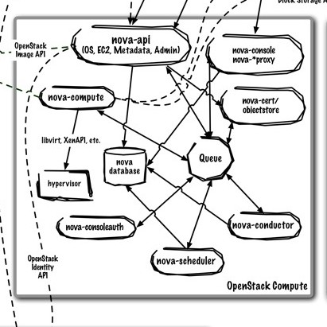

python-novaclient
python bindings and CLI for Nova
Joe Gordon
About Me
 Developer @ HP
Developer @ HP- nova-core
- hacking-core -- OpenStack style guide project
- contact information
- joe.gordon@gmail.com
- jog0 on freenode
- github.com/jogo
- launchpad.net/~jogo
OpenStack Architecture

Nova
Architecture Diagram
Nova REST API
API for users to manage
- instances
- ip addresses
- keypairs
- networks
- snapshots
- admin APIs
python-novaclient
github.com/openstack/python-novaclient
pip install -U python-novaclient
CLI
Python Library
Our Development Environment
ca.enocloud.com
Booting a VM
- CLI
- Python Library
CLI
$ nova --debug boot --flavor=m1.tiny --image=cirros-0.3.1-x86_64-uec\
--key-name=mykey myinstance
Python Library
import os
import time
from novaclient.v1_1 import client
def get_nova_creds():
d = {}
d['username'] = os.environ['OS_USERNAME']
d['api_key'] = os.environ['OS_PASSWORD']
d['auth_url'] = os.environ['OS_AUTH_URL']
d['project_id'] = os.environ['OS_TENANT_NAME']
return d
nova = client.Client(**get_nova_creds())
if not nova.keypairs.findall(name="mykey"):
with open(os.path.expanduser('~/.ssh/id_rsa.pub')) as fpubkey:
nova.keypairs.create(name="mykey", public_key=fpubkey.read())
image = nova.images.find(name="cirros")
flavor = nova.flavors.find(name="m1.tiny")
instance = nova.servers.create(name="test", image=image, flavor=flavor, key_name="mykey")
# Poll at 5 second intervals, until the status is no longer 'BUILD'
status = instance.status
while status == 'BUILD':
time.sleep(5)
# Retrieve the instance again so the status field updates
instance = nova.servers.get(instance.id)
status = instance.status
print "status: %s" % status
Anatomy of nova boot
REST API calls
Simplified
$ nova --debug boot --flavor=m1.tiny --image=cirros-0.3.1-x86_64-uec\
--key-name=mykey myinstance
POST http://$KEYSTONE_IP:5000/v2.0/tokens
GET http://$NOVA_IP:8774/v2/$UUID/images/detail
GET http://$NOVA_IP:8774/v2/$UUID/flavors/detail
POST http://$NOVA_IP:8774/v2/$UUID/servers
How to use the python-novaclient
Before getting started, source your credentials
OS_AUTH_URL=http://$KEYSTONE_IP:5000/v2.0
OS_PASSWORD=password
OS_TENANT_NAME=demo
OS_USERNAME=demo
Initialize a nova client
#!/usr/bin/env python
import os
from novaclient.v1_1 import client
def get_nova_creds():
d = {}
d['username'] = os.environ['OS_USERNAME']
d['api_key'] = os.environ['OS_PASSWORD']
d['auth_url'] = os.environ['OS_AUTH_URL']
d['project_id'] = os.environ['OS_TENANT_NAME']
return d
nova = client.Client(**get_nova_creds())
#Get token (optional, happens on its own if not specified)
nova.authenticate()
Loading a key pair
To login into the instance with
if not nova.keypairs.findall(name="mykey"):
with open(os.path.expanduser('~/.ssh/id_rsa.pub')) as fpubkey:
nova.keypairs.create(name="mykey", public_key=fpubkey.read())
print nova.keypairs.list()
Finding the flavor
print nova.flavors.list()
flavor = nova.flavors.find(name="m1.tiny")
Finding the image
print nova.images.list()
flavor = nova.image.find(name="Exact-Image-name")
Booting an instance
image = nova.images.find(name="cirros")
flavor = nova.flavors.find(name="m1.tiny")
instance = nova.servers.create(name="test", image=image, flavor=flavor, key_name="mykey")
Tracking the instance
# Poll at 5 second intervals, until the status is no longer 'BUILD'
status = instance.status
while status == 'BUILD':
time.sleep(5)
# Retrieve the instance again so the status field updates
instance = nova.servers.get(instance.id)
status = instance.status
print "status: %s" % status
print "address: %s" % instance.addresses
Destroying the instance
instance.delete()
Resources
Thank You
Questions?
Slides can be found at jogo.github.io
Powered by reveal.js